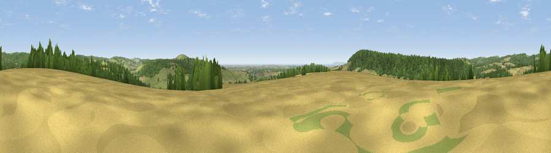

Viewpoint near West Dean
#7574 in England · top 16% of its area beats it · near West DeanThe view, rendered

A 360° render of this exact spot computed from the terrain model, tree cover and land cover — summer colours, afternoon light, calibrated against photographs of famous viewpoints. Real trees, hedges and buildings will differ in detail.
The panorama
Grey silhouette: terrain skyline in each direction (720 bearings, Earth curvature and refraction included). Dashed green: skyline with trees (+15 m) and buildings (+8 m) as obstacles. Blue strip: how far the ground is visible on each bearing.
Where the view opens
Wedge length = distance to the farthest visible ground on that bearing (vegetation-aware). Rings at 10, 25 and 50 km.
What fills the view
45% woodland · 27% grassland · 24% cropland · 2% water ·
Angular shares of the visible panorama (visual magnitude), not map area. Landscape diversity 0.51 (0–1 Shannon).
Key numbers
More beautiful places nearby
The staircase of upgrades: each row has a higher view potential than everything closer. Driving times are estimates from straight-line distance, calibrated against real road routing — check an actual route before setting out.
| Place | Direction | Drive | Score |
|---|---|---|---|
| Viewpoint near West Dean | SE · 3 km | ~7 min | 74.1 |
| Viewpoint near Stoughton | SW · 3 km | ~7 min | 79.5 |
| The Trundle | ESE · 3 km | ~8 min | 82.2 |
| Linch Down | N · 5 km | ~10 min | 85.2 |
| Beacon Hill | NW · 7 km | ~14 min | 85.8 |
| Chanctonbury Ring | E · 29 km | ~46 min | 87.0 |
| Viewpoint near St. Lawrence | SW · 47 km | ~67 min | 88.2 |
| Viewpoint near Niton | SW · 51 km | ~72 min | 89.2 |
50.90779, -0.79634 · source: screening · position refined by local search. Computed location — check access rights before visiting.